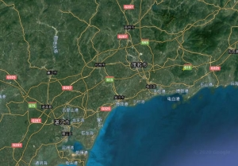
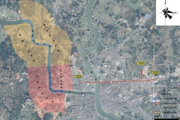
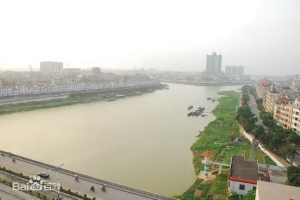

位置境域
化州市位于广东省西南部，鉴江中游，介于东经110°21′至 110°45′、北纬21°29′至22°13′之间，
北与广西北流市交界，南与广东省吴川市接壤，东与高州市和茂名市茂南区相连，西与广西陆川县及广东省廉江市毗邻。
全市总面积2354.2平方公里 。

地形地貌
化州市地形南北长，东西窄。地势由西北向东南倾斜，北高南低。
地貌类型以丘陵地为主，占全市总面积的75.5%。北部为高丘区，属云开大山支脉，占全市总面积的38.4%。
海拔200～400米，铁屎嶂为最高点。地貌为不规则山岭，属震旦系地层变质岩、混合岩风化剥蚀地形。
脉走向大多为北东向，山顶地形多似猪背脊状，少数为桌状山、单面山形。原基底岩石属泥盆系及寒武系八村群等地层，剥蚀而成
气候
化州市属南亚热带季风气候，夏长冬短，气候温和，阳光充足。
年平均日照时数1870.1小时，日照百分率42%。年平均温度在22.2℃～23.9℃之间，历年平均温度为22.9℃。
降水充沛，年平均降雨量1890毫米。但降雨在时空上分布的极度不均，一年中降雨量主要集中在5～9月，此期间的雨量占全年总雨量的75%，月降雨日数平均达17天。

水文
陵、罗、鉴三江及其支流汇归鉴江河系，象叶脉一样自北向南纵贯全境，全长349.8公里，流域面积占全市总面积的85.6%。
全市有中型水库2宗，小（一）型水库19宗，小（二）型水库59宗，山塘1345宗，库、塘水面1585公顷，总库容10904.6万立方米，引水工程共有291宗。
鉴、罗江自北至南纵贯化州全境，上游集雨面积6142平方公里。北部高丘地区山多田少、水面少，中部中丘和西南低丘地区山多田少，东南平原山少田多。
全市森林覆盖率48.1%。